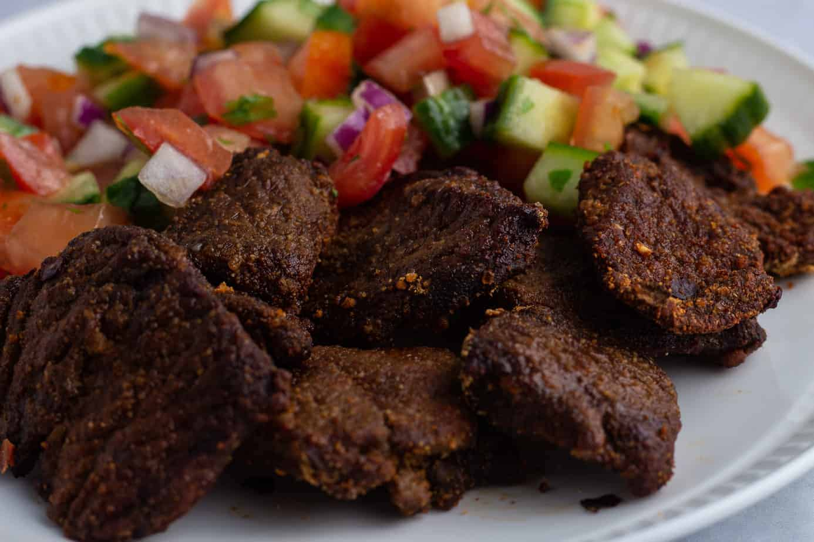

Home
Suya Recipe

Description
This incredibly flavorful, West African-style skewer started out as a geographically appropriate main course to pair with a batch of Jollof rice, but quickly turned into my new favorite marinade for beef.
Ingredients
- ¼ cup creamy natural peanut butter
- ½ small yellow onion, grated
- 2 tablespoons tomato paste
- 1 tablespoon olive oil
- 1 tablespoon kosher salt (or 1 1/2 teaspoons fine table salt)
- 2 teaspoons smoked paprika
- 1 teaspoon allspice
- ¾ teaspoon garlic powder
- ½ teaspoon cayenne pepper
- ½ teaspoon freshly ground black pepper
- ¼ teaspoon powdered ginger
- 2 pounds top sirloin steak cut into 1.5-inch cubes
Steps
- Combine peanut butter, grated onion, tomato paste, olive oil, salt, paprika, allspice, garlic powder, cayenne, black pepper, and powdered ginger in a mixing bowl. Stir until well combined.
- Add steak pieces to the marinade bowl and toss to coat thoroughly. Cover and allow to marinate in the refrigerator for about 2 hours.
- Preheat an outdoor grill with coal for high heat and lightly oil the grate.
- Thread marinated steak pieces onto large metal skewers.
- Grill over the hot white coals until desired doneness, 5 to 6 minutes per side.